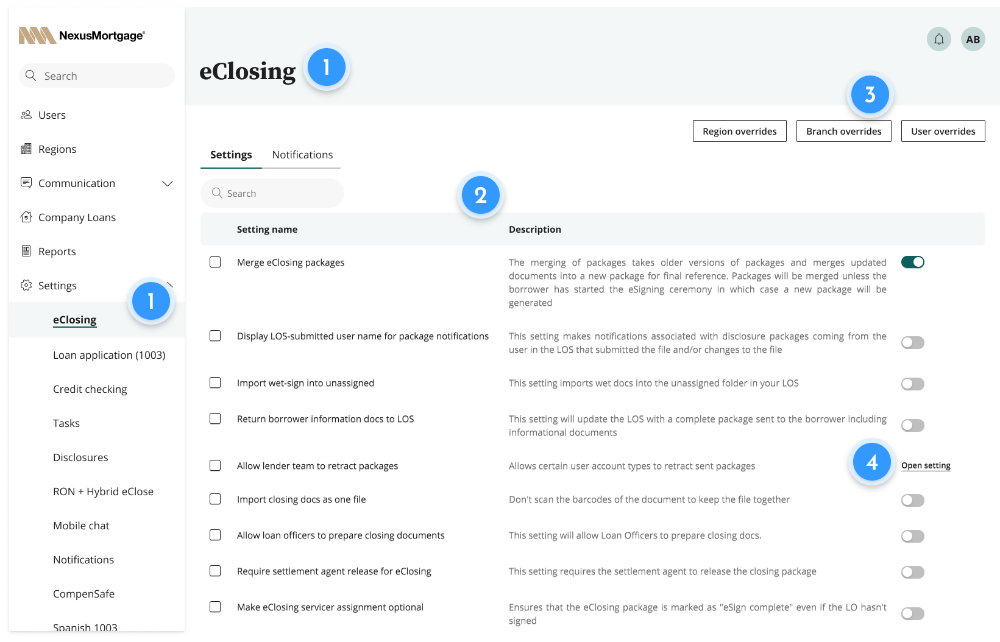
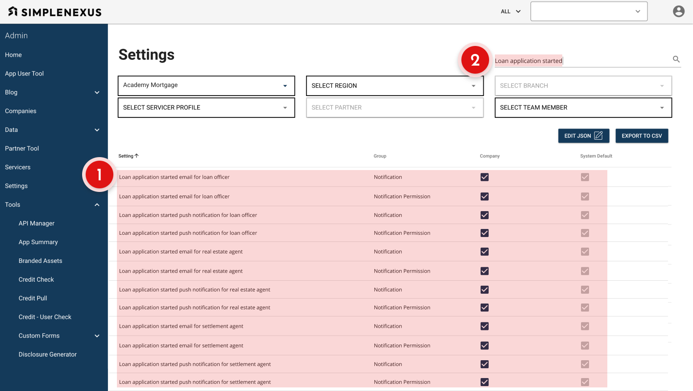
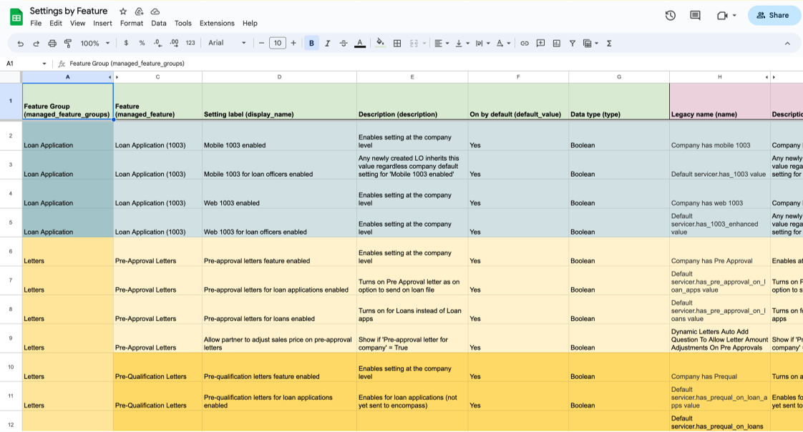
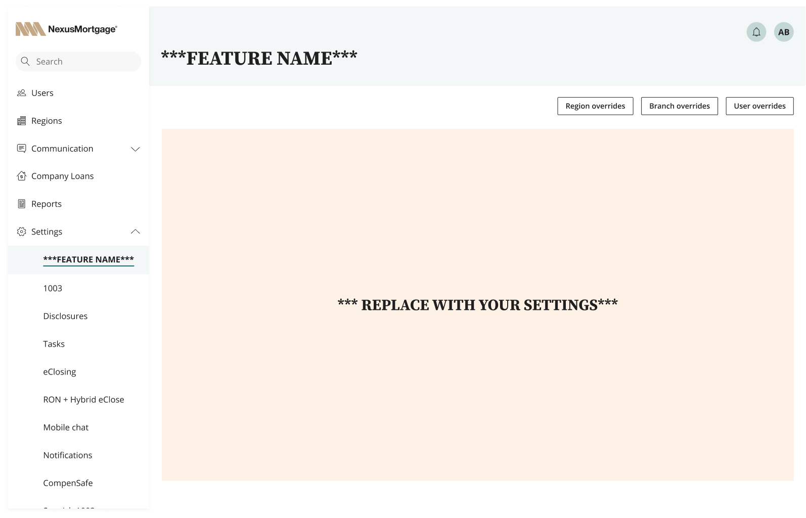
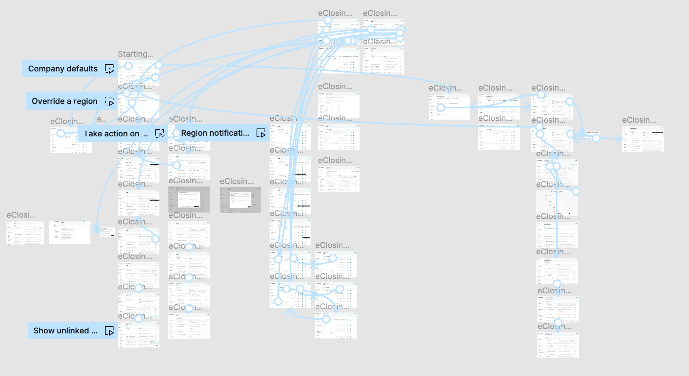

Re-designing internal systems to give users direct access to core product functionality
How better design empowered users and reduced onboarding times by 50% for a mortgage SaaS company.
Summary
Background
The mortgage application platform SimpleNexus was growing so fast that the Implementation Team was having trouble keeping pace with Sales.
Problem
Creating, configuring and testing new accounts was taking up to 90 days. Product configuration settings lived in a single, poorly documented data table that obscured setting interdependencies, was prone to bugs, and ultimately prevented us from exposing core product functionality to customers.
Solution
A complete redesign of our settings management system: standardized interaction patterns, user-centered naming conventions, and access to core functionality that previously required users to contact Customer Success.
A self-serve onboarding wizard that allowed customers to submit, in-product, key assets and information to expedite the configuring of their account.
Result
Users could now control key functionality – like client notifications – on their own.
Customer Success had more time with the customer to focus on strategy instead of tooling.
The company could start billing customers 14 days sooner.
14
days faster
customer onboarding
75%
reduction
in settings-related support tickets
Solution
Part 1: Re-imagine and break down monolithic Settings Table
Every bank customer required bespoke customization of our product to match their business practices.
The majority of our product configuration across all features happened inside a single Settings table.
before


All 1,680 product settings lived in one table
All settings for all features across the entire product were dumped in a single table

No naming conventions
All settings for all features across the entire product were dumped in a single table

Meaningless & inconsistent groupings
All settings for all features across the entire product were dumped in a single table

No visibility into inheritance behavior
All settings for all features across the entire product were dumped in a single table
After


Separate settings pages grouped by feature
Features were renamed to reflect users’ understanding of tool.

User-centered naming conventions + functional descriptions added
Settings were renamed and documented so that end-users would understand them.

Improved visibility for variation across company
Overrides were given their own page so admins could see at a glance how different regions and branches were deviating from company defaults.

Support for legacy settings with non-boolean UI
95% of settings had boolean values, but some had more complex UI.
Additional UI and functionality could be tucked inside a modal.
Part 2: Design controls for Notifications that end-users can access
Interviews with customer admins and with Customer Success reps showed that Notifications were the #1 feature that customers wanted access to.
before

Up to 12 settings per notification
A separate setting existed for each each notification message type and recipient.
Exact name required to locate notification
The only way to find the setting you wanted was to know it’s precise name and search the data table of 1,680 settings.
After

More intuitive UI
All 12 notifications types rolled up into a single parent notification, defined by the triggering event.
Notification triggers clearly defined
Previously, the notification trigger was not even indicated in the UI.
Ability to edit notification content and formatting
Previously, the message templates lived in a completely different area of the product.
Process
Understand the problem
what is the problem?
It takes 90 days to onboard customers
This is problematic for both the company and the customer.
Why?
Because we have to do everything for them
It also takes significant time to gather business requirements and marketing assets from the customer.
Why?
Because our settings are too clunky to expose to users
It also takes significant time to gather business requirements and marketing assets from the customer.
Why?
Because product teams are not held accountable for building intuitive settings for controlling the features they build
It also takes significant time to gather business requirements and marketing assets from the customer.
Why?
Because only internal teams access settings
It also takes significant time to gather business requirements and marketing assets from the customer.
Prioritize, scope and define V1 solution to this problem
what is the problem?
It takes 90 days to onboard customers
This is problematic for our company and the customer.
Why?
Because we have to do everything for them
It also takes significant time to gather business requirements and marketing assets from the customer.
Why?
Because our settings are too clunky to expose to users
It also takes significant time to gather business requirements and marketing assets from the customer.
Why?
Because product teams are not held accountable for building intuitive settings for controlling the features they build
It also takes significant time to gather business requirements and marketing assets from the customer.
Why?
Because only internal teams access settings
It also takes significant time to gather business requirements and marketing assets from the customer.
Define
Full audit of settings
First step was to take inventory of all our settings.
Document & rename
Then we
Ran these terms by our admin users and modified terminology as needed.

Part 3: Visualize "inheritance behavior" and provide controls for overriding defaults
Settings configuration at the company level automatically cascaded down to regions, branches and users.
Since all feature "inherit" in the same way, we wanted to visualize and standardize those interactions.
Solution
Group settings into dedicated Feature Pages
Features were reframed by how customers thought of them, not by how they were referred to internally.


Part 3: Visualize "inheritance behavior" and provide controls for overriding defaults
Settings configuration at the company level automatically cascaded down to regions, branches and users.
Since all feature "inherit" in the same way, we wanted to visualize and standardize those interactions.
Preventing future design debt
Standardized Figma templates for other designers
All settings share logic around inheritance, permissions and default overrides.
I wanted to standardize those common elements without being prescriptive about how a feature is designed or controlled.

Prototype showing inheritance behavior (click below to view)
The template file in Figma included a prototype that demonstrated how inheritance behavior should work for each feature.

HOlding product teams accountable
New feature work required corresponding settings page
Product teams were not longer allowed to dump feature flags and settings into a massive shared table.
In order to ship new product, they needed to expose admin controls with the design patterns above.
Onus on product teams to "own their settings experience”
With settings exposed to customers, product teams had a new prerogative to consider how admin users would configure the tooling they built.
Lessons learned
Focus on biggest problem area first
Spent too much time architecting a “universal design”. Not enough time identifying where that new design would have the most impact.
Notifications was the biggest area of concern for users. Applying the universal design to Notifications as the the initial use case would have brought more impact sooner.
Importance of documentation
Half of the effort of this project lay in tracking down undocumented settings in code and giving them meaning with descriptions and design.
Lack of accountability around documentation created huge impediments to change.
Beware the squeaky-wheel stakeholder
I thought I'd done a good job resisting the influence of an internal teams manager who had strong opinions about the tool we were building.
Ultimately, this person's involvement shifted our attention away from areas that would have been more impactful for our core users.